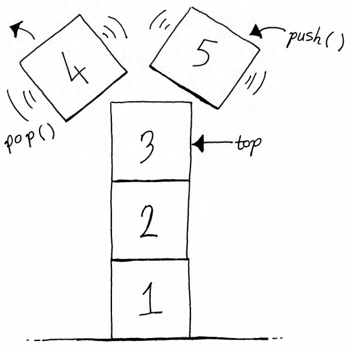

Stack
I think I lied when I said the linked list might be my favourite data structure. The ubiquitous stack is something else. Even though its implementation is comparatively straightforward, it has an elegance that never gets old for me.
What's a stack?
A common analogy used to describe a stack data structure is that of a stack of plates. Suppose you have an empty table. Then you put one plate on the table. Then you put a second plate on top of the first plate. Add a few more plates.
Now, if you want to take a plate off the stack of plates so you can dish your dinner, you'll probably be sensible and take a single plate off the top of the stack, instead of picking up a bunch of plates and trying to take one from the middle of the stack (like master cup stackers do) or, even worse, trying to pull the bottom plate out of the stack without causing the rest to come crashing down.
The last plate you put on the stack is the first one to be taken off. This order of operations is known as "Last In First Out", or "LIFO".
What's the point?
Stacks are really useful data structures. Apart from modelling real-world stacks like plates, you see them crop up in many places, including:
- Programming language stack-based virtual machines, which are used to execute bytecode.
- Program call stacks, which track the operations that are currently being executed as a computer program runs.
- Undo functionality in text editors, browsers and other programs.
Let's have a closer look at the key operations of a stack.
Push and pop
Putting a new element onto the stack is commonly called "pushing" and removing the most recently pushed element from the stack is known as "popping".
The time complexity of these operations will depend on how the stack is implemented. If it's implemented using a dynamic array, then pushing takes amortised constant time; some pushes might require the array to be resized. However, if we implement a stack using a linked list, then we get constant-time pushes and pops. All we need to do is track the top of the stack, which points to the most recently pushed element.
Let's take a look at a linked list-based stack implementation.
The code
We'll use Java's LinkedList to implement the stack. The first two methods return the size of the stack and tell us if it's empty. Then we have a method to push an element onto the stack, a method to look at the top element without removing it and a method to remove the top element. Pretty straightforward.
import java.util.EmptyStackException;
import java.util.LinkedList;
public class Stack<E> {
private LinkedList<E> list = new LinkedList<>();
public int size() {
return list.size();
}
public boolean empty() {
return list.size() == 0;
}
public E push(E element) {
list.addLast(element);
return element;
}
public E peek() {
if (empty()) throw new EmptyStackException();
return list.peekLast();
}
public E pop() {
if (empty()) throw new EmptyStackException();
return list.removeLast();
}
}Key takeaways
That's all for the stack. We've seen that it:
- Has many practical applications.
- Is simple to implement.
- Can have constant-time push, pop and peek operations, depending on the implementation.
We didn't mention any disadvantages. Well, depending on your use-case, a linked list-based stack might not be great. For example, if you need to be able to very quickly access an element in the middle of the stack, it might be better to use an array-based stack, or simply use an array. Searching through a stack takes time.
The next data structure is similar to a stack, but slightly different.